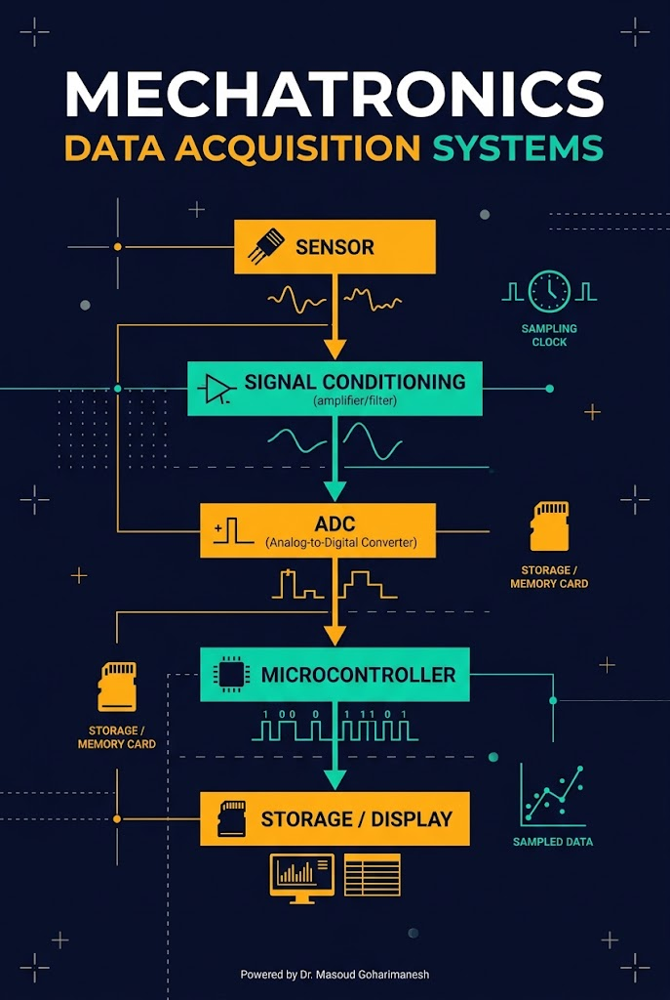
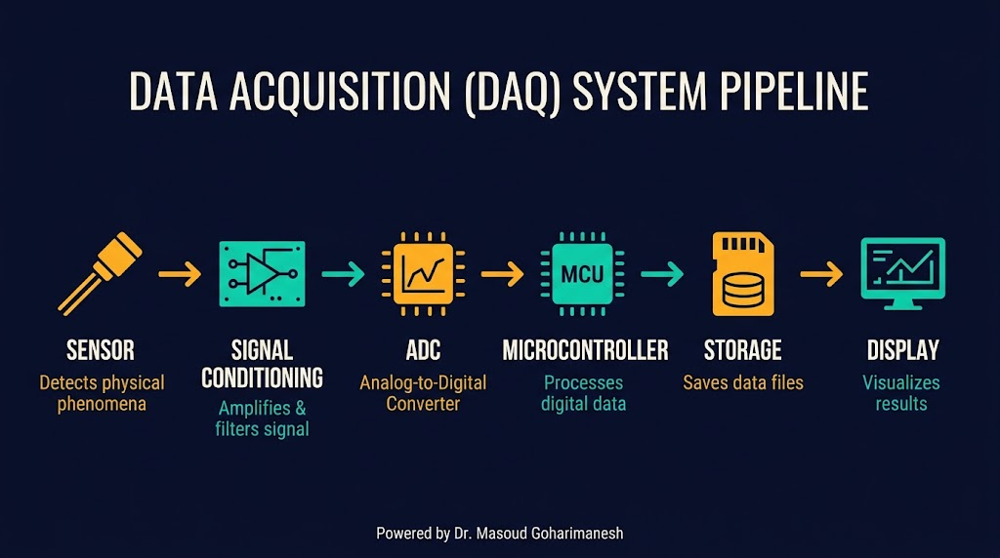
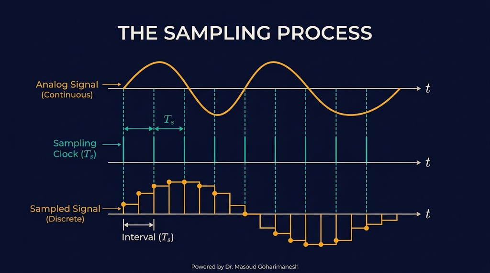
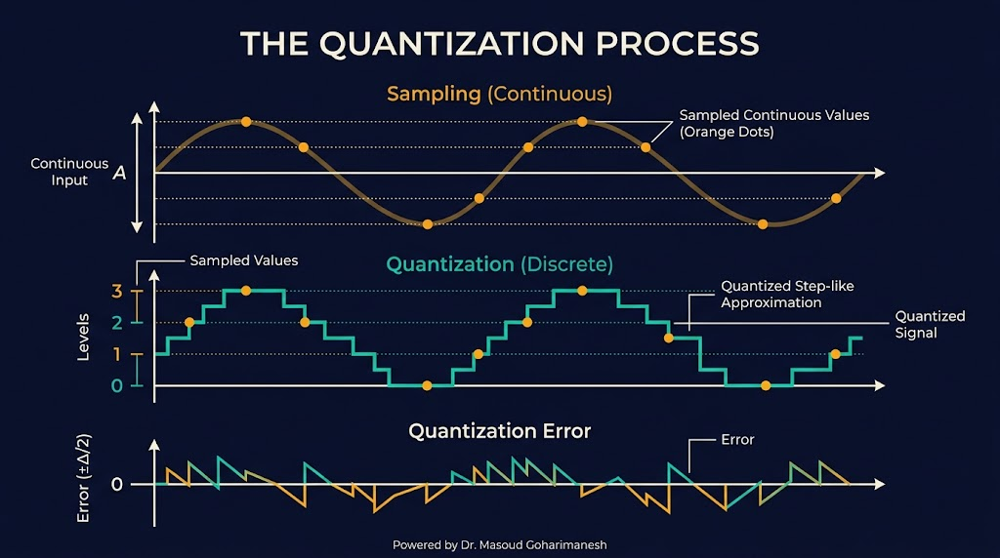
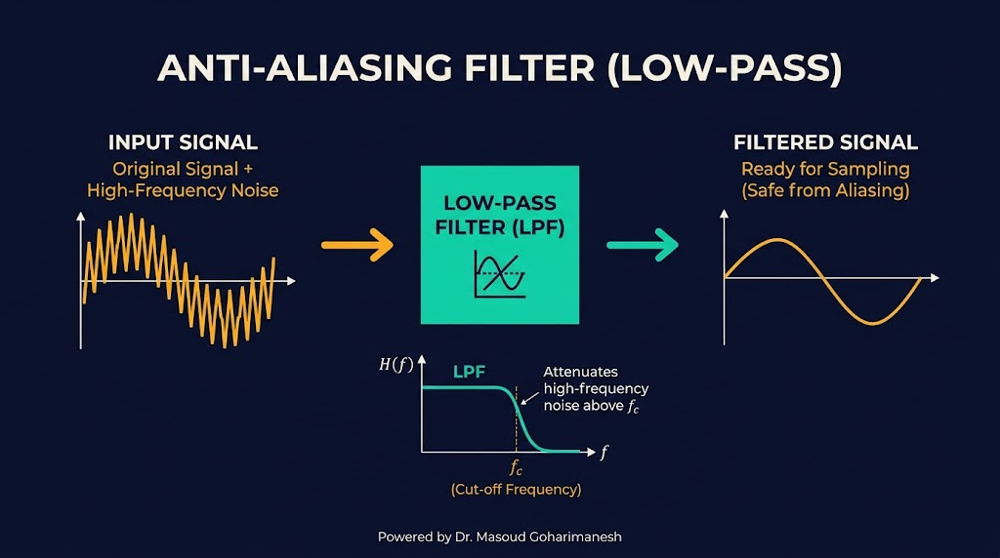
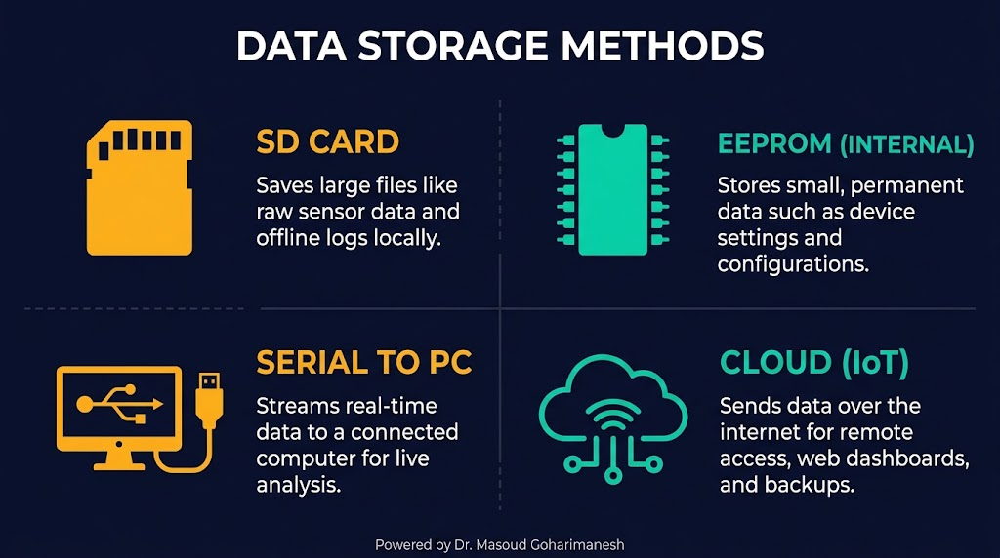

سیستمهای اکتساب داده
نمونهبرداری، تبدیل، ذخیرهسازی و پردازش
دکتر مسعود گوهریمنش
دانشیار گروه مهندسی مکانیک
دانشگاه تربت حیدریه | پاییز ۱۴۰۵
آیا میدانستید؟
بدون سیستم اکتساب داده، ربات شما هیچ چیز از دنیای بیرون نمیفهمد!
کاربردهای DAQ در رباتیک
- ثبت دادههای IMU برای تحلیل حرکت
- لاگ کردن موقعیت و سرعت ربات
- نقشهبرداری با سنسور اولتراسونیک
- تنظیم دقیق PID با دادههای واقعی
- تشخیص خرابی و نگهداری پیشبینانه
سوال کلاسی
برای ثبت دادههای یک ربات متحرک با سرعت ۱ متر بر ثانیه، حداقل نرخ نمونهبرداری چقدر باید باشد؟
سیستم اکتساب داده چیست؟
از دنیای آنالوگ به دنیای دیجیتال
سیستم اکتساب داده (DAQ) مجموعهای از سختافزار و نرمافزار است که سیگنالهای فیزیکی (آنالوگ) را از دنیای واقعی دریافت، به سیگنال دیجیتال تبدیل، و برای پردازش و ذخیرهسازی آماده میکند.
سختافزار
سنسور، تقویتکننده، ADC، میکروکنترلر
نرمافزار
درایور، برنامه نمونهبرداری، رابط کاربری
ذخیرهسازی
SD، EEPROM، کامپیوتر، ابر
اجزای یک سیستم DAQ
شش جزء اصلی

- سنسور: تبدیل کمیت فیزیکی به سیگنال الکتریکی
- شرطسازی سیگنال: تقویت، فیلتر، ایزوله
- ADC: تبدیل آنالوگ به دیجیتال
- میکروکنترلر: پردازش اولیه و کنترل
- ذخیرهسازی: SD، EEPROM، حافظه فلش
- نمایش/ارسال: LCD، سریال، WiFi، ابر
فرآیند نمونهبرداری
گرفتن عکسهای لحظهای از سیگنال پیوسته

نرخ نمونهبرداری (Sampling Rate)
f_s: تعداد نمونه در ثانیه (Hz) | T_s: فاصله زمانی بین نمونهها (ثانیه)
مثال: آردینو UNO با ADC داخلی، حداکثر ~۱۰,۰۰۰ نمونه در ثانیه (۱۰ kHz) میتواند بگیرد.
قضیه نایکوئیست و آلیاسینگ
چرا نرخ نمونهبرداری مهم است؟

قضیه نایکوئیست-شنون
برای بازسازی صحیح سیگنال، نرخ نمونهبرداری باید حداقل دو برابر بیشترین فرکانس موجود در سیگنال باشد.
پدیده آلیاسینگ (Aliasing)
اگر نرخ نمونهبرداری کمتر از حد نایکوئیست باشد، فرکانسهای بالا بهصورت کاذب بهعنوان فرکانسهای پایین نمایش داده میشوند. راهحل: فیلتر آنتیآلیاسینگ قبل از ADC.
کوانتیزاسیون و رزولوشن
تبدیل دامنه پیوسته به سطوح گسسته

رزولوشن ADC
n: تعداد بیت | V_ref: ولتاژ مرجع
آردینو UNO (۱۰ بیت، 5V): Δ ≈ ۴.۹mV
خطای کوانتیزاسیون
خطای حداکثر ±نصف یک سطح. با افزایش تعداد بیت، خطا کاهش مییابد.
فیلتر آنتیآلیاسینگ
حذف فرکانسهای بالا قبل از نمونهبرداری

چرا ضروری است؟
فیلتر پایینگذر آنالوگ قبل از ADC، فرکانسهای بالاتر از f_s/2 را حذف میکند تا از ایجاد آلیاسینگ جلوگیری شود.
پیادهسازی سختافزاری
فیلتر RC ساده یا فیلتر فعال با Op-Amp
پیادهسازی نرمافزاری
فیلتر دیجیتال (فقط بعد از ADC، جایگزین نیست)
تبدیل آنالوگ به دیجیتال در عمل
از سیگنال تا عدد
کد آردینو
const int sensorPin = A0;
void setup() {
Serial.begin(115200);
analogReference(DEFAULT); // 5V reference
}
void loop() {
int raw = analogRead(sensorPin); // 0-1023
float voltage = raw * (5.0 / 1023.0);
float tempC = voltage * 100.0; // LM35
Serial.print(raw);
Serial.print(" | ");
Serial.print(voltage, 3);
Serial.print(" V | ");
Serial.print(tempC, 2);
Serial.println(" C");
delay(100); // 10 Hz sampling
}
نکته: برای دادههای دقیقتر، چند نمونه بگیرید و میانگینگیری کنید (Oversampling). هر ۴ برابر افزایش تعداد نمونه، ۱ بیت رزولوشن اضافه میکند.
ذخیرهسازی داده
چهار روش اصلی

SD Card
- ظرفیت بالا (GB)
- قابل حمل
- مناسب دادههای حجیم (IMU، تصویر)
EEPROM
- داخلی، بدون قطعه اضافه
- حفظ داده با قطع برق
- مناسب تنظیمات و کالیبراسیون
سریال به PC
- بلادرنگ (Real-time)
- تحلیل فوری
- مناسب دیباگ و تنظیم PID
ابر (Cloud)
- دسترسی از راه دور
- مناسب IoT
- نیاز به WiFi (ESP32)
پردازش داده
سه تکنیک اصلی

میانگین متحرک
کاهش نویز با میانگینگیری از N نمونه اخیر. ساده و مؤثر.
فیلتر پایینگذر
حذف نویز فرکانس بالا. فیلتر RC دیجیتال یا IIR.
کالیبراسیون
تبدیل مقادیر خام به واحد فیزیکی. y = a·x + b
کد میانگین متحرک
const int N = 10;
int readings[N];
int index = 0;
long total = 0;
int filteredRead(int pin) {
total -= readings[index];
readings[index] = analogRead(pin);
total += readings[index];
index = (index + 1) % N;
return total / N;
}
نرخ نمونهبرداری و حجم داده
محاسبه نیازمندیها
فرمول حجم داده
f_s: نرخ نمونهبرداری (Hz) | bytes_per_sample: حجم هر نمونه (معمولاً ۲ یا ۴ بایت) | duration: مدت زمان (ثانیه)
مثالهای کاربردی
| کاربرد | نرخ نمونهبرداری | حجم در ۱ دقیقه |
|---|---|---|
| دمای محیط | ۱ Hz | ۱۲۰ بایت |
| IMU (شتاب + ژیرو) | ۱۰۰ Hz | ۳۶ کیلوبایت |
| موقعیت انکودر | ۱ kHz | ۳۶۰ کیلوبایت |
| صدا | ۴۴.۱ kHz | ۱۵.۹ مگابایت |
مثال کاربردی: ثبت داده IMU
تحلیل حرکت ربات
نیازمندیها
- سنسور: MPU6050 (شتاب + ژیروسکوپ ۳ محور)
- نرخ نمونهبرداری: ۱۰۰ Hz (کافی برای حرکت ربات)
- مدت زمان: ۵ دقیقه (تحلیل یک مأموریت)
- حجم داده: ۶ کانال × ۲ بایت × ۱۰۰ Hz × ۳۰۰s = ۳۶۰ کیلوبایت
- ذخیرهسازی: SD Card (کافی)
مراحل پیادهسازی
- راهاندازی I2C و MPU6050
- راهاندازی SD Card
- تایمر ۱۰ms (نرخ ۱۰۰Hz)
- خواندن داده و نوشتن در SD
تحلیل بعدی
- انتقال به کامپیوتر
- رسم نمودار در MATLAB/Python
- استخراج پارامترهای حرکتی
شبیهساز تعاملی
سیستم اکتساب داده زنده
شبیهساز DAQ — ثبت داده سنسور
پارامترها را تغییر دهید و دادههای نمونهبرداریشده را ببینید.
تمرینهای کلاسی
جلسه سیزدهم - سیستمهای اکتساب داده
الف) سوالات مفهومی
ب) تمرینهای عملی
ج) تمرین نوشتاری
د) چالش خلاقانه ★
جمعبندی
نکات کلیدی جلسه سیزدهم
- سیستم DAQ: از سنسور تا ذخیرهسازی و پردازش
- نمونهبرداری: قضیه نایکوئیست (f_s ≥ 2f_max)
- کوانتیزاسیون: رزولوشن ADC و خطای آن
- فیلتر آنتیآلیاسینگ: حذف فرکانسهای بالا قبل از ADC
- روشهای ذخیرهسازی: SD Card، EEPROM، سریال، ابر
- پردازش داده: میانگین متحرک، فیلتر پایینگذر، کالیبراسیون
- محاسبه حجم داده و انتخاب نرخ نمونهبرداری مناسب
جلسه بعد: ماشینهای حالت و کنترل ترتیبی
Powered by Dr. Masoud Goharimanesh